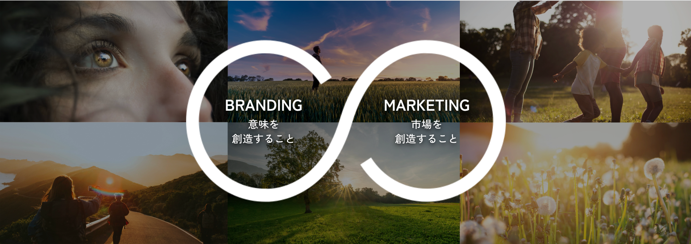

自社の強みを、確かな言葉に。
自社の価値や強み、資源を見つめ直し、経営・事業・営業・採用・発信につなげる実践プログラム。
Camps × FICCの共催でお届けします。
1DAY勉強会｜
2026.10.15(木) 10:00-17:00｜Camps｜参加無料
こんな迷い、抱えていませんか
自社の強みを、うまく言葉にできない
新しい事業の軸が、なかなか定まらない
営業資料や提案書に、自社らしさが出ない
採用で、自社の魅力がうまく伝わらない
発信のメッセージが、社内でバラバラになっている
ブランディングとマーケティング、両方の視点で

ブランディングは"意味を創造すること"。マーケティングは"市場を創造すること"。FICCは、ブランディングとマーケティングが分断されることのない『ブランドマーケティング』を通じて、ブランドの存在目的である大義が求められる市場を創り、持続的なビジネス成長を可能にするためのソリューションを提供しています。
ブランディング未来創造ラボとは
学ぶ、考える、つながる。3つのステップで、自社の価値を未来への打ち手に変えていきます。テーマは企業ごとに異なり、自社に合った課題にじっくり取り組みます。
1DAY勉強会
ブランドマーケティングの基本を学びながら、自社の価値や課題をあらためて見つめ直す1日集中プログラム。
実践コース［ラボ］
各社のテーマに沿って、FICCや参加企業と対話を重ねながら、解決の糸口を具体化していく少人数制プログラム。
共創交流会
参加者どうしのネットワークを持ち寄り、新たな共創や事業の可能性を探っていく対話の場。
※連続したプログラムですが、ラボや交流会からのご参加も可能です。
開催スケジュール
横にスクロールできます →
ブランディング
マーケティング
総括・成果発表会
こんな方におすすめです
経営者・経営幹部
経営の中でブランド価値を高めたい、長期的な視点で事業を成長させたい方
成果物：経営計画・事業計画
事業責任者
事業の方向性や成長戦略を見直し、具体的な打ち手を探したい方
成果物：事業計画・事業構想
新規事業担当者
新しい価値や事業の可能性を検証し、社内外との共創を通じて形にしたい方
成果物：新規事業・連携企画
営業・採用・広報担当
自社の価値や魅力を効果的に伝え、社内外の共感や行動につなげたい方
成果物：営業資料・提案資料・採用メッセージ
既存事業を見直したい方
事業やサービスの価値を再定義し、差別化や成長のポイントを見つけたい方
成果物：事業計画・差別化戦略
地域資源を活かしたい方
地域の資源や魅力を活かした新たな価値づくりや事業化を目指したい方
成果物：新規事業・連携企画
昨年度の様子
参加者どうしが対話し、考え、深め合いながら、自社の価値や未来を描いていきました。

ブランドマーケティングを基礎から学ぶ

参加者どうしで対話を重ねる

アイデアや方向性を整理していく

自社の「資源」について問い直す

成果を共有し、次の一歩へ

ネットワークを広げる交流の時間
※内容・写真は昨年度の様子の一部です。
- 非常に満足(83.3%)
- 満足(16.7%)
- 活用イメージが明確に湧いている(50%)
- すでに具体的に活用している(33.3%)
- これから活用できそうだと感じている(16.7%)
参加者の声
多くの仲間と出会えて、視野が広がりました。
自分の中にあった課題意識が、明確になった。
プロのサポートで、アイデアを形にできそうです。
ここでできたつながりが、今も活動に活きています。
講師紹介
森 啓子
FICC代表取締役 / ブランドマーケティングコンサルタント
米マウント・ホリヨーク大学BA(文学士)、米マサチューセッツ芸術大学大学院MFA(美術学修士)課程修了。米国デザイン・広告会社で勤務後、2005年、FICCに入社。2019年、代表取締役に就任。経営のコアに「リベラルアーツ」を掲げ、人の想いや学びから価値を創造し続けるイノベーティブ組織を目指す。
村中 沙織
コンテクストデザイナー / コミュニティデザイナー
慶應義塾大学のリベラルアーツ環境で学んだ後(美学美術史)、大手SIerやソニーでの10年以上の国際的な業務経験を経てFICCに参画。多文化圏でのビジネス・生活視座とアート哲学の素養を背景に、企業や地域の「意味」を再解釈し、戦略へ翻訳することを専門とする。英仏語を中心に6カ国語に馴染みあり。広島出身。
参加概要
-
 会場イノベーション・ハブ・ひろしま Camps
会場イノベーション・ハブ・ひろしま Camps
〒730-0031 広島県広島市中区紙屋町1丁目4-3 エフ・ケイビル 1F -
¥参加費無料
-
 実践コースの選抜1DAY勉強会参加者、およびCamps・FICCからのご案内者限定
実践コースの選抜1DAY勉強会参加者、およびCamps・FICCからのご案内者限定 -
 申込方法申込みフォームよりお申し込みください
申込方法申込みフォームよりお申し込みください
よくある質問
参加には条件がありますか?
実践コース［ラボ］への参加は必須ですか?
オンライン交流会の内容は?
1DAY勉強会だけの参加も可能ですか?
申込後のキャンセルはできますか?
※その他のご質問は、お問い合わせフォームよりお気軽にご連絡ください。
自社の強みを、確かな言葉に。
自社の価値を見つめ直し、次の一手を見つける一日に。まずは1DAY勉強会からご参加ください。